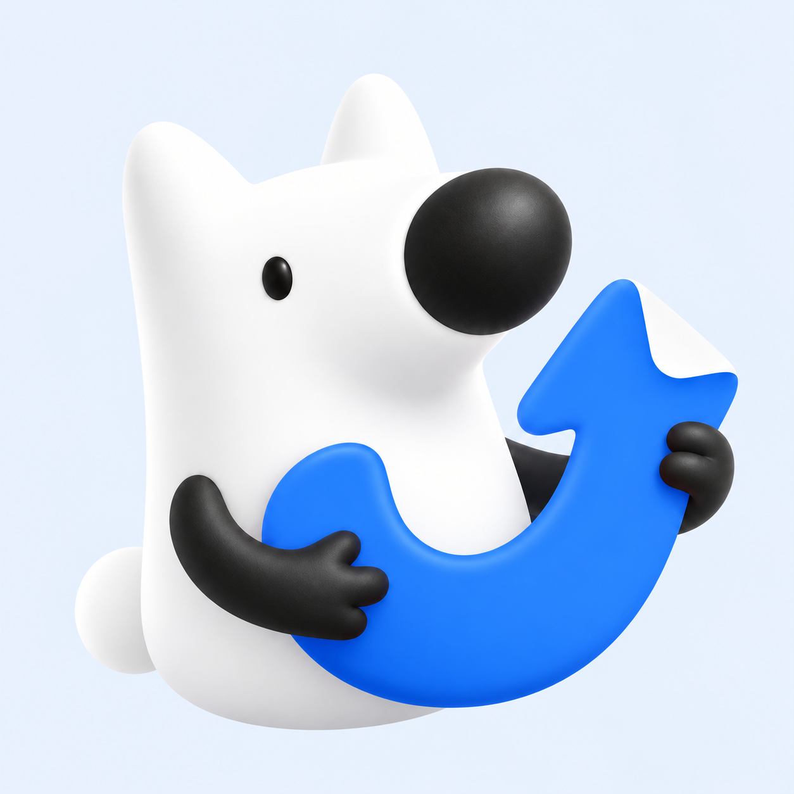
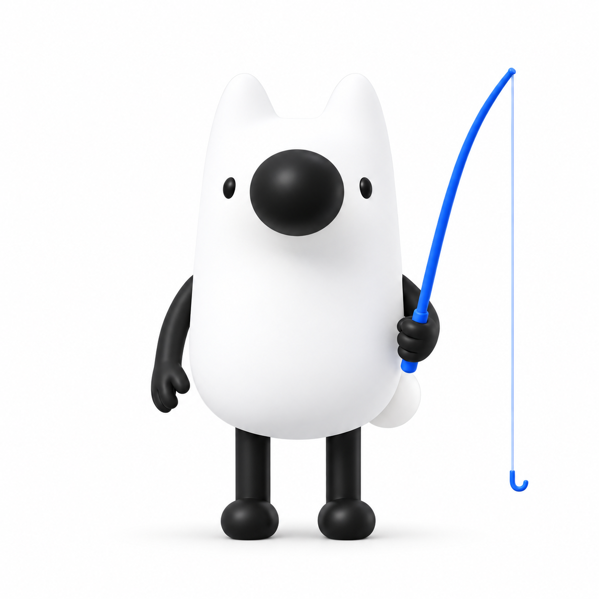
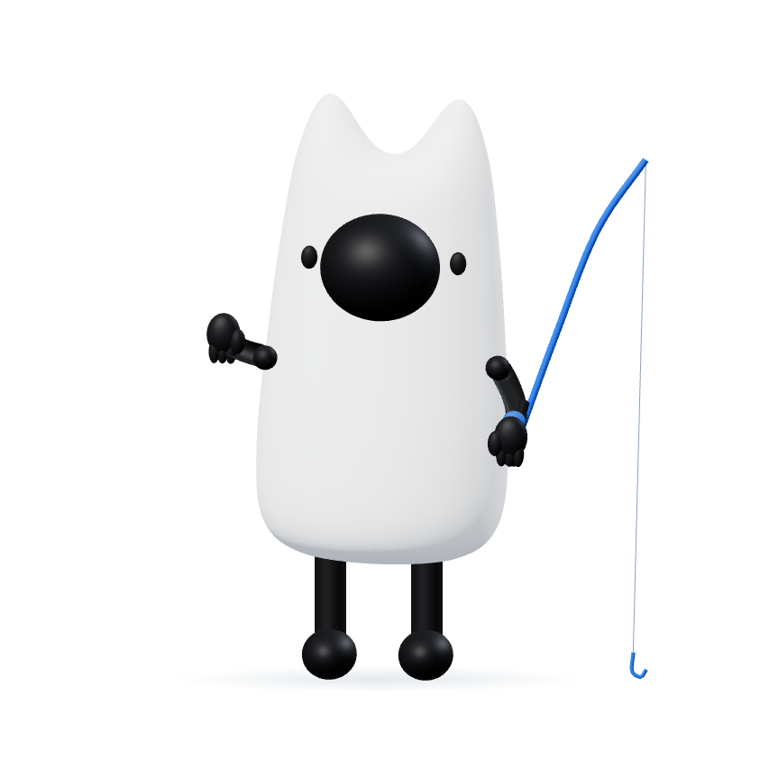
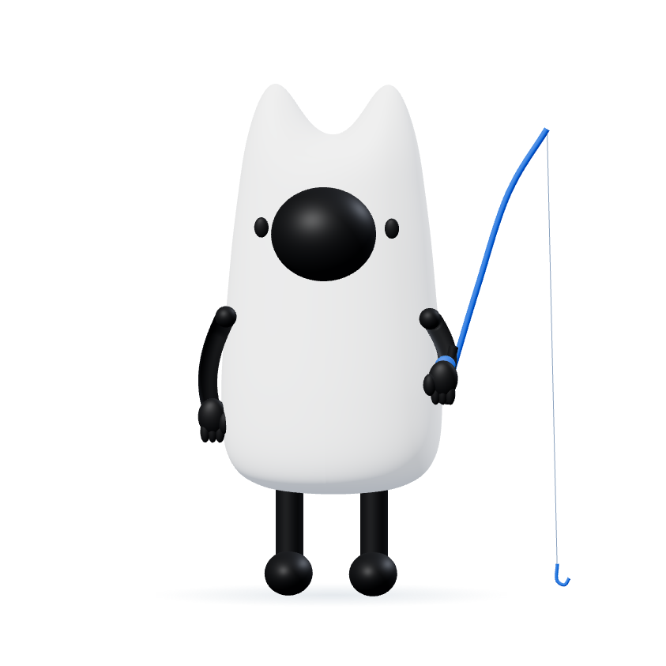
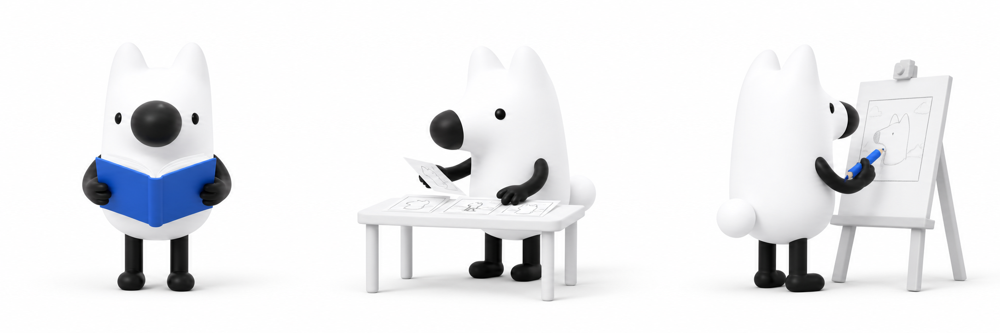

颜色 Token
品牌蓝用于识别；主按钮使用深一档 #1264DC，保证白色按钮文字的对比度。
品牌蓝
#1772F6深墨
#17233D页面雾灰
#F6F7F9内容纸白
#FFFFFF选中浅蓝
#F0F6FF成功
#16845B警告
#B76A00错误
#C7352B
上个钩设计规范预览知乎故事创作者的宣发工作台。让刘看山陪你从故事里找到吸引力，再把它制作成可以复核、编辑和导出的宣传素材。

App 图标采用刘看山近景与蓝色钩形，保持柔和立体质感。完整持竿形象用于等待；角色不穿斗笠、披风或其他服饰。
导航使用角色近景图标与“上个钩”字标，不再压缩整根鱼竿。浅蓝底、白色角色、品牌蓝钩形与界面保持同一色系。
App 图标与持竿动作承担不同用途，保持同一角色身份。斗笠与披风方向已撤销；动作区仍需继续对齐精修图的材质与比例。
蓝色用于行动、当前状态和链接，灰白承载阅读。角色保留白色体积与黑色五官；道具使用同一套蓝灰色，不再增加黄色角色配色。
品牌蓝用于识别；主按钮使用深一档 #1264DC，保证白色按钮文字的对比度。
#1772F6#17233D#F6F7F9#FFFFFF#F0F6FF#16845B#B76A00#C7352B控件 6–8px，工作面 12px，弹窗 16px。静态面板默认无阴影，仅浮层使用阴影。
“他推开门时，故事才真正开始。”
宋体只用于故事摘录、传播文案预览和画面内容；通用标题与按钮坚持系统黑体，避免整站杂志化。
按钮说清下一步会发生什么。技术词不占据主界面，错误贴近问题出现，并说明内容是否保留。
每屏一个主操作。危险操作与主操作保持距离；图标按钮必须有无障碍名称。
五步流程保持稳定。模型分析属于“理解故事”，推广文案属于“确定文案”，模型名称和内部评分不进入主要导航。
角色负责陪伴，界面负责说清结果。切换下方状态，体验信息、作品保留与恢复操作如何一起变化。

导入一篇你有权使用的作品，一起把它整理成文案、漫画和配乐。
保留完整正文，生成后由你复核。
一处专注的动作，一句准确的阶段说明。这里可手动切换演示；正式产品仅接收真实任务状态，不用计时器推进阶段。

梳理人物关系、关键事件和原文依据。
不显示预估百分比，完成后再进入下一步。
示例把“导入故事”做成一个清晰工作面，而不是多个视觉权重相同的卡片。隐私提醒靠近提交动作，步骤轨道始终可见。
根据故事正文准备传播文案，生成后请复核与原作是否一致。
以你提供的刘看山为基础延展，不再使用故事獭。保留尖耳、白色躯干、大黑鼻与细黑四肢，角色不进入漫画格和海报画布。持竿标识及文案状态以本页品牌区和交互示例为准。

状态与等待区采用参考三视图重建的实时 3D 动作，替换低清 GIF。下方三联图保留作为姿态参考；重建模型并非官方源模型。
首次进入持竿招呼；文案完成提起纸卡；素材完成整理作品；失败检查纸稿；导出递出作品夹。通过手臂、身体和道具动作表达区别，不用同一段循环。
全页共用一个 3D 渲染器，上限 30 帧/秒、2 倍像素密度。离屏停止；暂停或减少动态时保留静态姿态。不支持 WebGL 时显示高清静态图。
以下是待实施规格，不是修复完成报告。设计确认与功能验收分别记录；不新增产品功能。
真实文本、两页漫画与 BGM 有成功记录；海报编辑和形式选择走过演示流程。实际导出文件逐项检查、完整异常路径、Windows 实测仍待完成。
移除模拟百分比；厘清返回和取消；保留有效结果；分别处理网络、配置与内容校验错误。没有真实阶段信息时合并等待说明，不按时间推进。
验收：取消后迟到结果不覆盖新输入；重试不丢正文；文案完成动作只接受有效完成状态。
同时检查构图 Prompt、实际图片尺寸、分格坐标及后期文字排版。文字自动换行和测量，无法确认安全位置时放到分镜外。预览与导出使用一致规则。
验收：头脸与关键动作不被文字覆盖；长文不裁切；导出文件实际打开复核，而不只检查结果页可达。
统一“上个钩”名称和刘看山视觉；模型名称、耗时指标、内部状态不占据主界面。统一按钮、输入帮助、等待、错误和成功反馈。
验收：不承诺未经验证的结果保留、自动删除或后台运行能力；角色不进入创作者作品。
在同一真实作品及现有各输出分支上验证生成、编辑、返回和导出；覆盖失败、重试、取消、减少动态与静态回退。macOS 与 Windows 分开记录实测结论。
验收：保留原 API/BGM/启动配置与他人修改；没有密钥泄漏；只关闭自己启动的服务。
后续在本窗口统一推进：两部分确认 → 规划与分工 → 功能正确性修复 → 视觉与动效接入 → 完整回归。